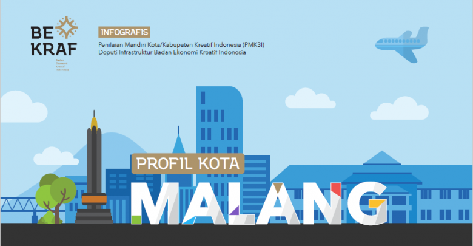

Profil
Kota Malang

PROFIL
Kota Malang adalah : sebuah kota di Provinsi Jawa Timur Indonesia. Kota ini berada di dataran tinggi cukup sejuk terletak pada 90 km sebelah selatan kota Surabaya dan wilayahnya di kelilingi oleh Kabupaten Malang. Malang merupakan kota terbesar kedua di utara timur dan di kenal dengan julukan kota pelajar.
sejarah
Seperti halnya kebanyakan kota –kota lain di Indonesia pada umumnya, Kota Malang tumbuh dan berkembang setelah hadirnya pemerintah colonial Hindia Belanda fasilitas umum di rencanakan sedemikian rupa agar, memenuhi kebutuhan keluarga belanda. Kesan diskriminatif masih berbekas hingga sekarang, misalnya Ijen Boullevard dan kawasan sekitarnya. Pada mulanya hanya dinikmati oleh keluarga asal Belanda dan bangsa Eropa lainya, sementara penduduk Pribumi harus puas bertempat tinggal di pinggiran kota dengan fasilitas yang kurang memadai. Kawasan perumahan itu sekarang bagai monumen yang menyimpan misteri dan seringkali mengundang keluarga Belanda yang pernah bermukim disana untuk bernostalgia.
Pada tahun 1879 di Kota Malang mulai beroperasi kereta api dan sejak itu Kota Malang berkembang dengan pesatnya. Berbagai kebutuhan masyarakat semakin meningkat terutama akan ruang gerak melakukan berbagai kegiatan. Akibatnya terjadilah perubahan tata guna tanah, daerah yang terbangun bermunculan tanpa kendali, perubahan fungsi lahan mengalami perubahan sangat pesat, seperti dari fungsi pertanian menjadi perumahan dan industri.
Sejalan dengan perkembangam tersebut diatas, urbanisasi terus berlansung dan kebutuhan masyarakat akan perumahan meningkat diluar kemampuan pemerintah, sementaratingkat ekonomi urbanis sangat terbatas, yang selanjutnya akan berakibat timbulnya perumahan-perumahan liar yang pada umumnya berkembang disekitar daerah perdagangan, disepanjang jalur hujau, sekitar sungai, rel kereta api dan lahan-lahan yang dianggap tidak bertuan. Selang beberapa lama kemudian daerah itu menjadi perkampungan, dan degradasi kualitas lingkungan hidup mulai terjadi dengan segala dampak bawaannya. Gejala-gejala itu cenderung terus meningkat dan sulit dibanyangkan apa yang terjadi seandainya masalah itu diabaikan.
.jpg)
Sejarah
Malang juga dikenal sebagai kota pendidikan, karena memiliki sejumlah perguruan tinggi ternama. Perguruan tinggi negeri termasuk Universitas Brawijaya, Universitas Negeri Malang (IKIP Malang), Universitas Islam Negeri Malang, Akademi Penyuluh Pertanian/Sekolah Tinggi Penyuluh Pertanian Malang (APP/STPP), Politeknik Negeri Malang (POLTEKMA), Politeknik Kesehatan Malang, serta terdapat cabang Sekolah Tinggi Akuntansi Negeri (STAN). Beberapa perguruan tinggi swasta terkemuka diantaranya Universitas Muhamadiyah Malang (UNMUH), Universitas Merdeka (UNMER) Malang, Universitas Gajayana (UNIGA) Malang, Universita Islam Malang (UNISMA), Universitas Kanjuruhan (UNIKAN) Malang, Universitas Wisnu Werdana (UWISWERDANA) Malang, Sekolah Tinggi Ilmu Ekonomi (STIE) Malang Kuceswara, Universitas Widyagama (UNWIDYA) Malang, Universitas Tri Buana Tungga Dewi (UNITRI) Malang, Institut Teknologi Nasional (ITN) Malang, Sekolah Tinggi Ilmu Administrasi (STIA) Malang, Sekolah Tinggi Bahasa Asing (STIBA) Malang, dan lain sebagainya. Sebagai kota pendidikan, banyak mahasiswa berasal dari luar yang kemudian menetap di Malang, terutama dari luar Indonesia Timur seperti Bali, Nusa Tenggara, Sulawesi, Kalimantan, Maluku dan Papua. Selain Perguruan Tinggi, ada beberapa sekolah menengah swasta yang cukup dikenal ditanah air, seperti SMUK Kolese Santo Yusur, SMUK Santa Maria dan SMAK st Albertus (SMA Dempo)